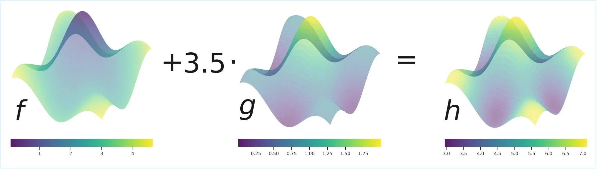

4.1 Tangent Space \(T_p \mathcal{M}\)
Chapter 4 • Tangent Spaces
4.1 Tangent Space \(T_p \mathcal{M}\)
Figure 4.2 illustrates the construction and the role of charts and chart transition maps, and Appendix C.3 works it out on an explicit example.
The \(\mathbb{R}\)-vector space of scalar fields (or smooth functions) on a smooth manifold \(\left(\mathcal{M}, \mathcal{O}, {\mathcal{A}}_{C^\infty}\right)_d\) is the triplet \((C^{\infty}(\mathcal{M}), \oplus, \odot)\), where \(C^{\infty}(\mathcal{M}) := \{ f: \mathcal{M} \to \mathbb{R} \mid f \text{ is smooth} \}\), with smoothness in the sense of Chapter 3 (\(f \circ \mathscr{X}^{-1}\) is \(C^\infty\) for every chart), and the addition and s-multiplication are defined as: \[ \begin{aligned} &\begin{array}{c} \begin{aligned} \oplus : C^{\infty}(\mathcal{M}) \times C^{\infty}(\mathcal{M}) &\longrightarrow C^{\infty}(\mathcal{M}) \\ (f_1, f_2) &\longmapsto f_1 \oplus f_2 \end{aligned} \\[6pt] \text{with } (f_1 \oplus f_2)(p) := f_1(p) + f_2(p). \end{array} \quad &\begin{array}{c} \begin{aligned} \odot : \mathbb{R} \times C^{\infty}(\mathcal{M}) &\longrightarrow C^{\infty}(\mathcal{M}) \\ (\lambda, f) &\longmapsto \lambda \odot f \end{aligned} \\[6pt] \text{with } (\lambda \odot f)(p) := \lambda \cdot f(p). \end{array} \end{aligned} \]
Figure 4.1 illustrates how two scalar fields defined upon a manifold can be multiplied and added together following the properties of a vector space.
A curve on the manifold \(\left(\mathcal{M}, \mathcal{O}, \mathcal{A}\right)_d\) is a map \begin{align*} \gamma : \mathbb{R} &\longrightarrow \mathcal{M}\\ \lambda &\longmapsto \gamma(\lambda). \end{align*} To be able to properly define the degree of differentiability of \(\gamma\), we endow the source set \(\mathbb{R}\) with its standard smooth manifold structure \(\left(\mathbb{R}, \mathcal{O}_\mathbb{R}, \{(\mathbb{R}, \mathrm{id}_\mathbb{R})\}\right)_1\), so that, by the definition of smooth maps in Chapter 3, \(\gamma\) is smooth precisely when its chart representatives \(\mathscr{X} \circ \gamma\) are \(C^\infty\) (and \(C^k\) when they are \(C^k\)).
A curve is said to pass through a point \(p \in \mathcal{M}\) at parameter \(\lambda_0 \in \mathbb{R}\) if \(\gamma(\lambda_0) = p\).
Given a curve \(\gamma\) at least \(C^1\) on the manifold \(\left(\mathcal{M}, \mathcal{O}, \mathcal{A}\right)_d\), its velocity at the point \(\gamma(\lambda_0) =p \in \mathcal{M}\) w.r.t. a field \(f \in C^{\infty}(\mathcal{M})\) is the linear map: \begin{align*} v_{\gamma, p} \colon C^{\infty}(\mathcal{M}) &\xlongrightarrow{\;\;\sim\;\;} \mathbb{R} \\ f &\longmapsto v_{\gamma, p}(f) \coloneqq \frac{d}{d\lambda} (f \circ \gamma) \Big|_{\lambda = \lambda_0} = (f \circ \gamma)' (\lambda_0), \end{align*} where the composition \((f \circ \gamma) \colon \mathbb{R} \longrightarrow \mathbb{R}\) maps the curve parameter to the real line via the field \(f\). The derivative \((f \circ \gamma)'(\lambda_0)\) captures the rate of change of \(f\) along the curve \(\gamma\) at the point \(p\).

Figure 4.1: Representation of the \(\mathbb{R}\)-vector space of smooth functions \(C^{\infty}(\mathcal{M})\). Two different functions defined on the manifold \(\mathcal{M}\) are shown, \(f\) and \(g\). These two functions are added together (and the function \(g\) is multiplied by a scalar) to obtain a new function \(h = f \oplus 3.5 \odot g\), which is also a smooth function on the manifold \(\mathcal{M}\). The addition and scalar multiplication operations are defined pointwise, meaning that for each point \(p \in \mathcal{M}\), the value of the function \(h\) at \(p\) is given by \(h(p) = f(p) + 3.5 \cdot g(p)\). The tangent (\(\mathbb{R}\)-vector) space to \(\left(\mathcal{M}, \mathcal{O}, \mathcal{A}\right)_d\) at \(p \in \mathcal{M}\) is a triplet \((T_p \mathcal{M}, \oplus_T, \odot_T)\), where \(T_p \mathcal{M} := \{ v_{\gamma, p} \mid \gamma \text{ is a smooth curve that passes through } p \}\) – hence \(v_{\gamma, p} \in T_p \mathcal{M}\) is a vector – and the operations \(\oplus_T\) (addition) and \(\odot_T\) (s-multiplication) are defined as1: \[ \begin{aligned} &\begin{array}{c} \begin{aligned} \oplus_T : T_p \mathcal{M} \times T_p \mathcal{M} &\to T_p \mathcal{M} \\ (v_{\gamma_1, p}, v_{\gamma_2, p}) &\mapsto v_{\gamma_1, p} \oplus_T v_{\gamma_2, p} \end{aligned} \\[6pt] \text{with } (v_{\gamma_1, p} \oplus_T v_{\gamma_2, p})(f) := v_{\gamma_1, p}(f) + v_{\gamma_2, p}(f). \end{array} \quad &\begin{array}{c} \begin{aligned} \odot_T : \mathbb{R} \times T_p \mathcal{M} &\to T_p \mathcal{M} \\ (\alpha, v_{\gamma, p}) &\mapsto \alpha \odot_T v_{\gamma, p} \end{aligned} \\[6pt] \text{with } (\alpha \odot_T v_{\gamma, p})(f) := \alpha \cdot v_{\gamma, p}(f). \end{array} \end{aligned} \]
4.1.1 Basis and Coordinate Components for \(T_p \mathcal{M}\)
At this point, we introduce a notational convention that, while extremely convenient and widely used, can be deceptively suggestive. It creates the illusion that the abstract objects we have defined are intrinsically tied to coordinates, when in fact, this is merely an artifact of expressing them in terms of a chart. Keeping this in mind, let us proceed.
Given a chart \((\mathcal{U}, \mathscr{X})\) around the point \(p \in \mathcal{M}\) such that \(p \in \mathcal{U}\), we can expand the velocity of the curve \(\gamma\) at \(p\) acting on a scalar field \(f\) as2: \begin{align*} v_{\gamma, p} (f) := (f \circ \gamma)'(\lambda_0) = \big( (\underbrace{f \circ \mathscr{X}^{-1}}_{\mathbb{R}\longleftarrow\mathbb{R}^d}) \circ (\underbrace{\mathscr{X} \circ \gamma}_{\mathbb{R}^d\longleftarrow\mathbb{R}}) \big)' (\lambda_0) = \sum_{i=1}^{d} \underbrace{(\mathscr{X} \circ \gamma)_i'(\lambda_0)}_{\dot{\gamma}^i_\mathcal{U}(\lambda_0)} \underbrace{\cdot \partial_i \left[f \circ \mathscr{X}^{-1}\right] (\mathscr{X}(p))}_{\left( \frac{\partial}{\partial \mathscr{X}^i} \right)_{p} (f)}. \end{align*} This motivates the following expression: \begin{align*} v_{\gamma, p} (f) = \sum_{i=1}^{d} \dot{\gamma}^i_{\mathcal{U}}(\lambda_0) \cdot \left( \frac{\partial}{\partial \mathscr{X}^i} \right)_{p} (f) &\longrightarrow v_{\gamma, p} = \sum_{i=1}^{d} \underbrace{\dot{\gamma}^i_{\mathcal{U}}(\lambda_0)}_{\substack{\text{i-th component} \\ \text{of } v_{\gamma, p} \text{ w.r.t. } \mathscr{X}}} \cdot \underbrace{\left( \frac{\partial}{\partial \mathscr{X}^i} \right)_{p}}_{\substack{\text{i-th basis element} \\ \text{on } T_p\mathcal{U} \text{ w.r.t. } \mathscr{X}}} \end{align*}
We refer to the elements \(\dot{\gamma}^i_{\mathcal{U}}(\lambda_0)\in \mathbb{R}\) as the i-th coordinate component of \(v_{\gamma, p}\) w.r.t. the chart \((\mathcal{U}, \mathscr{X})\); and the terms \(\left( \frac{\partial}{\partial \mathscr{X}^i} \right)_{p}\in T_p\mathcal{U}\) as the i-th basis element of \(T_p\mathcal{U}\) w.r.t. the same chart \((\mathcal{U}, \mathscr{X})\).
The set \begin{align*} e \coloneqq \left\lbrace \left( \frac{\partial}{\partial \mathscr{X}^1} \right)_{p},\; \ldots,\; \left( \frac{\partial}{\partial \mathscr{X}^d} \right)_{p} \right\rbrace \end{align*} is the chart-induced basis of \(T_p\mathcal{M}\) associated with the chart \((\mathcal{U}, \mathscr{X})\). The proof that this set constitutes a basis for \(T_p\mathcal{M}\) is given in Appendix B.5.
From this, it follows that the dimension of the tangent space \(T_p\mathcal{M}\) coincides with the dimension \(d\) of the smooth manifold3 \(\mathcal{M}\).
Given a chart \((\mathcal{U}, \mathscr{X})\) around the point \(p \in \mathcal{M}\), we can extract the components, \(\dot{\gamma}^i_{\mathcal{U}}(\lambda_0)\in \mathbb{R}\), of the tangent vector \(v_{\gamma, p} \in T_p\mathcal{M}\) as4: \begin{align*} &\sum_{j=1}^{d} \dot{\gamma}^j_{\mathcal{U}}(\lambda_0) \cdot \left( \frac{\partial}{\partial \mathscr{X}^j} \right)_{p} (\mathscr{X}^i) = v_{\gamma, p} (\mathscr{X}^i) \longrightarrow \dots\\ \sum_{j=1}^{d} \dot{\gamma}^j_{\mathcal{U}}(\lambda_0) &\cdot \underbrace{\partial_j \left[\mathscr{X}^i \circ \mathscr{X}^{-1}\right] (\mathscr{X}(p))}_{\delta^i_j} = (\mathscr{X}^i \circ \gamma)'(\lambda_0) \longrightarrow \dot{\gamma}^i_{\mathcal{U}}(\lambda_0) = (\mathscr{X}^i \circ \gamma)'(\lambda_0) \in \mathbb{R} \end{align*}
Given two intersecting charts \(\left( \mathcal{U}, \mathscr{X} \right)\) and \(\left( \mathcal{V}, \mathscr{Y} \right)\), with \(\mathcal{U} \cap \mathcal{V} \neq \emptyset\), the Jacobian of the chart transition map \(\textrm{\runic ᛖ}_{\mathcal{V}\mathcal{U}} \coloneqq \mathscr{X} \circ \mathscr{Y}^{-1}\) at a point \(p \in \mathcal{U} \cap \mathcal{V}\) is defined as follows: \begin{align*} \left( \textrm{\runic ᛞ}_{\mathcal{U}\mathcal{V}} \right)^i_{j}\left( \mathscr{Y}(p) \right) \coloneqq \left( \frac{\partial \mathscr{X}^i}{\partial \mathscr{Y}^j} \right)_p = \underbrace{\partial_j \left[ \mathscr{X}^i \circ \mathscr{Y}^{-1} \right]}_{ \left(\mathbb{R}^d\right)_\mathcal{U} \longleftarrow \left(\mathbb{R}^d\right)_\mathcal{V} } \big( \mathscr{Y}(p) \big). \end{align*}
Similarly, the Jacobian of the inverse transition map \(\textrm{\runic ᛖ}_{\mathcal{U}\mathcal{V}} \coloneqq \mathscr{Y} \circ \mathscr{X}^{-1}\) is given by: \begin{align*} \left( \textrm{\runic ᛞ}_{\mathcal{V}\mathcal{U}} \right)^i_{j}\left( \mathscr{X}(p) \right) \coloneqq \left( \frac{\partial \mathscr{Y}^i}{\partial \mathscr{X}^j} \right)_p = \underbrace{\partial_j \left[ \mathscr{Y}^i \circ \mathscr{X}^{-1} \right]}_{ \left(\mathbb{R}^d\right)_\mathcal{V} \longleftarrow \left(\mathbb{R}^d\right)_\mathcal{U} } \big( \mathscr{X}(p) \big). \end{align*}
By construction, Jacobians satisfy the following property: \begin{align*} \sum_{k=1}^{d} \left( \textrm{\runic ᛞ}_{\mathcal{U}\mathcal{V}} \right)^i_{k} \left( \mathscr{Y}(p) \right) \cdot \left( \textrm{\runic ᛞ}_{\mathcal{V}\mathcal{U}} \right)^k_{j} \left( \mathscr{X}(p) \right) &= \sum_{k=1}^{d} \left\lbrace \left( \frac{\partial \mathscr{X}^i}{\partial \mathscr{Y}^k} \right)_{p} \cdot \left( \frac{\partial \mathscr{Y}^k}{\partial \mathscr{X}^j} \right)_{p} \right\rbrace\\ &= \sum_{k=1}^{d} \left\lbrace \partial_j \left[ \mathscr{Y}^k \circ \mathscr{X}^{-1} \right] \big( \mathscr{X}(p) \big) \cdot \partial_k \left[ \mathscr{X}^i \circ \mathscr{Y}^{-1} \right] \big( \mathscr{Y}(p) \big) \right\rbrace\\ &= \partial_j \left[ \left( \mathscr{X}^i \circ \mathscr{Y}^{-1} \right) \circ \left( \mathscr{Y} \circ \mathscr{X}^{-1} \right) \right] \big( \mathscr{X}(p) \big)\\ &= \partial_j \left[ \mathscr{X}^i \circ \left( \mathscr{Y}^{-1} \circ \mathscr{Y} \right) \circ \mathscr{X}^{-1} \right] \big( \mathscr{X}(p) \big)\\ &= \partial_j \left[ \mathscr{X}^i \circ \mathscr{X}^{-1} \right] \big( \mathscr{X}(p) \big) = \delta^i_j. \end{align*}
This expresses the fact that the Jacobian of the transition map \(\textrm{\runic ᛖ}_{\mathcal{U}\mathcal{V}}\) is the inverse of the Jacobian of the transition map \(\textrm{\runic ᛖ}_{\mathcal{V}\mathcal{U}}\); in particular, both are invertible at every point of the overlap. This is a consequence of the \(C^1\)-compatibility of the two charts (the chain rule applied to two mutually inverse differentiable maps), not a criterion for it. It is, however, a useful sanity check when computing Jacobians explicitly.
The chart-induced basis transforms as follows between two intersecting chart domains \(\mathcal{U}\) and \(\mathcal{V}\) containing a point \(p \in \mathcal{U} \cap \mathcal{V}\). Given two charts \(\left( \mathcal{U}, \mathscr{X} \right)\) and \(\left( \mathcal{V}, \mathscr{Y} \right)\), the basis vectors induced by \(\mathscr{X}\) and \(\mathscr{Y}\) at the point \(p\) are related by: \begin{align*} \left( \frac{\partial}{\partial \mathscr{X}^i} \right)_{p} (f) &\coloneqq \partial_i \left[ f \circ \mathscr{X}^{-1} \right] \big( \mathscr{X}(p) \big) = \partial_i \left[ \left( f \circ \mathscr{Y}^{-1} \right) \circ \left( \mathscr{Y} \circ \mathscr{X}^{-1} \right) \right] \big( \mathscr{X}(p) \big)\\ &= \sum_{j=1}^{d}\left\lbrace \partial_i\left[ \mathscr{Y} \circ \mathscr{X}^{-1} \right]_j (\mathscr{X}(p)) \cdot \left\lbrace \partial_j \left[ f \circ \mathscr{Y}^{-1}\right] \circ ( \mathscr{Y} \circ \mathscr{X}^{-1}) \right\rbrace (\mathscr{X}(p)) \right\rbrace\\ &= \sum_{j=1}^d \left\{ \partial_i \left[ \mathscr{Y}^j \circ \mathscr{X}^{-1} \right] \big( \mathscr{X}(p) \big) \cdot \partial_j \left[ f \circ \mathscr{Y}^{-1} \right] \big( \mathscr{Y}(p) \big) \right\}\\ &= \sum_{j=1}^d \left\{ \left( \frac{\partial \mathscr{Y}^j}{\partial \mathscr{X}^i} \right)_{p} \cdot \left( \frac{\partial}{\partial \mathscr{Y}^j} \right)_{p} (f) \right\}. \end{align*}
Since this holds \(\forall f \in C^\infty(\mathcal{M})\), we conclude the transformation law for the basis vectors: \begin{align*} \left( \frac{\partial}{\partial \mathscr{X}^i} \right)_{p} = \sum_{j=1}^d \left( \frac{\partial \mathscr{Y}^j}{\partial \mathscr{X}^i} \right)_{p} \cdot \left( \frac{\partial}{\partial \mathscr{Y}^j} \right)_{p} = \sum_{j=1}^d \left( \textrm{\runic ᛞ}_{\mathcal{V}\mathcal{U}} \right)^j_{i}\left(\mathscr{X}(p)\right) \cdot \left( \frac{\partial}{\partial \mathscr{Y}^j} \right)_{p}. \end{align*}
We say that covariant objects follow this transformation law.
Correspondingly, the vector components transform as follows between two intersecting chart domains \(\mathcal{U}\) and \(\mathcal{V}\) containing a point \(p \in \mathcal{U} \cap \mathcal{V}\). Given a vector \(v_{\gamma, p}\) expressed in the chart-induced bases of \(\left( \mathcal{U}, \mathscr{X} \right)\) and \(\left( \mathcal{V}, \mathscr{Y} \right)\), we have: \begin{align*} v_{\gamma, p} &= \sum_{i=1}^{d} \dot{\gamma}^i_{\mathcal{U}}(\lambda_0) \cdot \left( \frac{\partial}{\partial \mathscr{X}^i} \right)_{p} = \sum_{i=1}^{d} \dot{\gamma}^i_{\mathcal{V}}(\lambda_0) \cdot \left( \frac{\partial}{\partial \mathscr{Y}^i} \right)_{p}. \end{align*}
Substituting the basis change derived previously into the left-hand expression for \(v_{\gamma, p}\), we get: \begin{align*} \sum_{i=1}^{d} \dot{\gamma}^i_{\mathcal{U}}(\lambda_0) \cdot \sum_{j=1}^{d} \left( \frac{\partial \mathscr{Y}^j}{\partial \mathscr{X}^i} \right)_{p} \cdot \left( \frac{\partial}{\partial \mathscr{Y}^j} \right)_{p} = \sum_{i=1}^{d} \dot{\gamma}^i_{\mathcal{V}}(\lambda_0) \cdot \left( \frac{\partial}{\partial \mathscr{Y}^i} \right)_{p}. \end{align*}
Since the basis vectors \(\left( \frac{\partial}{\partial \mathscr{Y}^j} \right)_{p}\) are linearly independent, we can equate the components on both sides to obtain the transformation law for the vector components: \begin{align*} \dot{\gamma}^k_{\mathcal{V}}(\lambda_0) = \sum_{i=1}^{d} \left( \frac{\partial \mathscr{Y}^k}{\partial \mathscr{X}^i} \right)_{p} \cdot \dot{\gamma}^i_{\mathcal{U}}(\lambda_0) = \sum_{i=1}^{d} \left( \textrm{\runic ᛞ}_{\mathcal{V}\mathcal{U}} \right)^k_{i}\left( \mathscr{X}(p) \right) \cdot \dot{\gamma}^i_{\mathcal{U}}(\lambda_0). \end{align*}
We say that contravariant objects follow this transformation law.

4.1.2 Notation
At this point in the notes, we introduce a new notation that, while standard in differential geometry, may initially obscure the true nature of the objects we have previously defined. Up until now, I have deliberately avoided this notation to emphasize the fundamental nature of these objects. However, as we progress, continuing with the previous notation will become increasingly cumbersome. Thus, it is necessary to adopt the conventional notation for vectors (and in subsequent sections for covectors, and fields). Here we are not introducing any new mathematical concepts, we will just alter our previous notation to align with the commonly used language in differential geometry.
First, let us introduce the Einstein summation convention, a notational rule that eliminates the need to explicitly write summation symbols. According to this convention, whenever an index appears once as an upper index and once as a lower index within a single term, a summation over all possible values of that index is implicitly understood. For example, the expression \(A^i B_i\) is shorthand for the full summation \(\sum_{i} A^i B_i\).
It is worth noting that, in some contexts, this convention is occasionally extended beyond its strict form. In particular, it is common to abuse the convention slightly by allowing summation over repeated indices even when they are not “contracted”, that is, even if the repeated index appears both in upper position or both in lower position. For instance, the expression \(A^i B^i\) is often understood as shorthand for \(\sum_i A^i B^i\) despite both indices being upper.
Throughout these notes, we will adopt the standard form of the Einstein summation convention, where summation is implied only when an index appears once upstairs and once downstairs within a term. We will avoid the extended usage where repeated indices are summed without contraction, in order to maintain notational clarity.
Let us now apply the Einstein summation convention to express how a vector in the tangent space \(T_p\mathcal{M}\) can be expanded in terms of basis elements induced by two charts \(\left( \mathcal{U}, \mathscr{X} \right)\) and \(\left( \mathcal{V}, \mathscr{Y} \right)\), both containing the point \(p \in \mathcal{M}\): \begin{align*} v_{\gamma, p} = \dot{\gamma}^i_{\mathcal{U}}(\lambda_0) \cdot \left( \frac{\partial}{\partial \mathscr{X}^i} \right)_p = \dot{\gamma}^i_{\mathcal{V}}(\lambda_0) \cdot \left( \frac{\partial}{\partial \mathscr{Y}^i} \right)_p. \end{align*} This expression reflects the fact that the tangent vector \(v_{\gamma, p}\) is an intrinsic geometric object, while its representation in terms of components and basis vectors depends on the particular chart employed.
Now let us suppose that we have another curve \(\delta \colon \mathbb{R} \rightarrow \mathcal{M}\) that passes through the same point \(p\). Then, the tangent vector \(v_{\delta, p}\) can be expressed in terms of the basis elements induced by the charts \(\left( \mathcal{U}, \mathscr{X} \right)\), and \(\left( \mathcal{V}, \mathscr{Y} \right)\) as: \begin{align*} v_{\delta, p} = \dot{\delta}^i_{\mathcal{U}}(\lambda_0) \cdot \left( \frac{\partial}{\partial \mathscr{X}^i} \right)_p = \dot{\delta}^i_{\mathcal{V}}(\lambda_0) \cdot \left( \frac{\partial}{\partial \mathscr{Y}^i} \right)_p. \end{align*} For simplicity, from now on we will typically denote these vectors in \(T_p\mathcal{M}\) by the symbols \(\mathcal{X}_p \coloneqq v_{\gamma, p}\) and \(\mathcal{Y}_p \coloneqq v_{\delta, p}\). This avoids repeatedly writing expressions like \(v_{\gamma, p}\), which carry unnecessary clutter when the geometric role of the object is already clear from context.
Now we introduce yet another shorthand notation for the basis elements induced by the charts \(\left( \mathcal{U}, \mathscr{X} \right)\) and \(\left( \mathcal{V}, \mathscr{Y} \right)\), respectively: \(\partial{x_i} \coloneqq \left( \frac{\partial}{\partial \mathscr{X}^i} \right)_p\) and \(\partial{y_i} \coloneqq \left( \frac{\partial}{\partial \mathscr{Y}^i} \right)_p\).
Taking all these notation changes into account, we can produce the following summary table: \[ \begin{tabular}{c@{\hspace{1.5cm}}c@{\hspace{1.5cm}}c@{\hspace{1.5cm}}c} \textbf{Vector notation} & \textbf{Basis vectors} & \textbf{In chart } $\mathscr{X}$ & \textbf{In chart } $\mathscr{Y}$ \\[10pt] $\mathcal{X}_p \coloneqq v_{\gamma, p}$ & $\left(\partial{x_i}\right)_p \coloneqq \left( \dfrac{\partial}{\partial \mathscr{X}^i} \right)_p$ & $x^i_p \coloneqq \dot{\gamma}^i_{\mathcal{U}}(\lambda_0)$ & $y^i_p \coloneqq \dot{\gamma}^i_{\mathcal{V}}(\lambda_0)$ \\[10pt] $\mathcal{Y}_p \coloneqq v_{\delta, p}$ & $\left(\partial{y_i}\right)_p \coloneqq \left( \dfrac{\partial}{\partial \mathscr{Y}^i} \right)_p$ & $\tilde{x}^i_p \coloneqq \dot{\delta}^i_{\mathcal{U}}(\lambda_0)$ & $\tilde{y}^i_p \coloneqq \dot{\delta}^i_{\mathcal{V}}(\lambda_0)$ \end{tabular} \]
With this convention, the basis expansions of the two vectors reads: \[ \mathcal{X}_p = \underbrace{ x^i_p \cdot \left(\partial{x_i}\right)_p }_{\text{in chart } \mathscr{X}} = \underbrace{ y^i_p \cdot \left(\partial{y_i}\right)_p }_{\text{in chart } \mathscr{Y}}, \qquad \mathcal{Y}_p = \underbrace{ \tilde{x}^i_p \cdot \left(\partial{x_i}\right)_p }_{\text{in chart } \mathscr{X}} = \underbrace{ \tilde{y}^i_p \cdot \left(\partial{y_i}\right)_p }_{\text{in chart } \mathscr{Y}}. \]
It is important to remark once again the different roles played by the symbols \(\mathscr{X}\), \(\mathcal{X}_p\), \(x^i_p\), \(\tilde{x}^i_p\), and \(\left(\partial{x_i}\right)_p\), despite their similar appearance. The symbol \(\mathscr{X}\) refers to the chart map itself, i.e., the homeomorphism that assigns coordinates to points in the manifold. By contrast, \(\mathcal{X}_p\) and \(\mathcal{Y}_p\) are abstract tangent vectors at the point \(p \in \mathcal{M}\)—geometric objects that are independent of any chart. The symbols \(x^i_p\) and \(\tilde{x}^i_p\) denote the numerical components of the vectors \(\mathcal{X}_p\) and \(\mathcal{Y}_p\), respectively, with respect to the basis induced by the chart \(\mathscr{X}\) (and similarly \(y^i_p\) and \(\tilde{y}^i_p\) in the chart \(\mathscr{Y}\)). Meanwhile, \(\left(\partial{x_i}\right)_p \coloneqq \left( \frac{\partial}{\partial \mathscr{X}^i} \right)_p\) and \(\left(\partial{y_i}\right)_p \coloneqq \left( \frac{\partial}{\partial \mathscr{Y}^i} \right)_p\) represent the basis vectors of the tangent space \(T_p\mathcal{M}\) associated with each chart. Despite the visual similarity of these symbols, they refer to fundamentally different mathematical objects5.
With this notation in place, the rules governing changes of coordinates between charts become: \[ \left(\partial{x_i}\right)_p = \underbrace{\left( \frac{\partial \mathscr{Y}^j}{\partial \mathscr{X}^i} \right)_{p}}_{ \left( \textrm{\runic ᛞ}_{\mathcal{V}\mathcal{U}} \right)^j_{i}\left( \mathscr{X}(p) \right) } \cdot\; \left(\partial{y_j}\right)_p \] Similarly, the transformation law for the components of a vector: \[ y^i_p = \underbrace{ \left(\frac{\partial \mathscr{Y}^i}{\partial \mathscr{X}^j}\right)_{p} }_{ \left( \textrm{\runic ᛞ}_{\mathcal{V}\mathcal{U}} \right)^i_{j}\left( \mathscr{X}(p) \right) } \cdot\; x^j_p. \]
The same rule applies to the components \(\tilde{x}^i_p\) and \(\tilde{y}^i_p\) of the vector \(\mathcal{Y}_p\), since the transformation rule depends solely on the change of basis induced by the chart transition, not on the particular vector. In this compact notation, the correspondence between the transformation of basis vectors (covariant) and the transformation of components (contravariant) becomes immediately apparent. Up to this point in the notes, I have not placed indices arbitrarily up or down, but rather deliberately in positions that reflect their transformation behavior: upper indices for contravariant objects, and lower indices for covariant objects.
The fact that the sum and scalar multiplication defined in this way yield well defined velocity vectors inside of \(T_p \mathcal{M}\) is not trivial. It requires proving that for any pair of smooth curves \(\gamma_1\) and \(\gamma_2\) passing through \(p\), there exists a third smooth curve whose velocity at \(p\) realizes the sum \(v_{\gamma_1, p} \oplus_T v_{\gamma_2, p}\), and similarly for the s-multiplication. A constructive proof of this fact is provided in Appendix B.4.
Multivariable chain rule: Given two functions \(f\) and \(g\) defined as: \[
\begin{aligned}
&\begin{array}{c}
\begin{aligned}
g : \mathbb{R}^D &\to \mathbb{R}^d \\
(x_1, ..., x_D) &\mapsto g(x_1, ..., x_D) := \left(g_1(x_1, ..., x_D), ..., g_d(x_1, ..., x_D)\right)
\end{aligned}
\end{array}
\quad
&\begin{array}{c}
\begin{aligned}
f : \mathbb{R}^d &\to \mathbb{R} \\
(x_1, ..., x_d) &\mapsto f(x_1, ..., x_d)
\end{aligned}
\end{array}
\end{aligned}
\] Let us define a function \(h : \mathbb{R}^D \to \mathbb{R}\) such that \(h(x) := (f \circ g)(x_1, ..., x_D)\), the multidimensional chain rule states that \[
\partial_\alpha h(x_1, ..., x_D) = \partial_\alpha(f \circ g)(x_1, ..., x_D) = \sum_{i=1}^d\left\lbrace \partial_\alpha{g_i}(x_1, ..., x_D) \cdot \left[ \partial_i f \circ g \right](x_1, ..., x_D) \right\rbrace,
\] where \(\partial_\alpha h\) represents the derivative w.r.t the \(\alpha\) input variable of \(h\) (the same applies to \(\partial_\alpha g_i\)).
If \(D=1\), \(g : \mathbb{R} \to \mathbb{R}^d\), and for simplicity of notation, we can substitute the differentiation symbol “\(\partial_\alpha\)” directly by “\({}'\)”: \[
{h}'(x) = (f \circ g)'(x) = \sum_{i=1}^d\left\lbrace {g_i}'(x) \cdot \left[ \partial_i f \circ g \right](x) \right\rbrace,
\]
It is important to emphasize that this fact does not stem solely from the existence of a single chart around the point \(p\). Rather, it is a global structural property of the manifold: the requirement that there exists an atlas \(\mathcal{A}\) whose charts cover \(\mathcal{M}\) and are each homeomorphic to open subsets of \(\mathbb{R}^d\) ensures that the local Euclidean structure — and hence the dimension \(d\) — is consistent across all points. This guarantees that the tangent space \(T_p\mathcal{M}\) has the same dimension \(d\) at every point \(p \in \mathcal{M}\). In other words, the notion of dimension for a smooth manifold is globally well-defined, not merely a property observed in a single coordinate patch.
The step marked with an underbrace in the equation above is a direct consequence of the fact that the function \begin{align*} \mathscr{X}^i \circ \mathscr{X}^{-1} : \mathbb{R}^d &\longrightarrow \mathbb{R}\\ \left( \alpha^1, \dots, \alpha^d \right) &\longmapsto \left(\mathscr{X}^i \circ \mathscr{X}^{-1}\right) \left( \alpha^1, \dots, \alpha^d \right) = \alpha^i. \end{align*} is simply the projection onto the \(i\)-th coordinate, hence, computing its partial derivative with respect to the \(j\)-th coordinate yields the Kronecker delta \(\delta^j_i\).
I might be overdoing this a little bit but I assure you that fundamental misconceptions in the future will be avoided if the reader interiorizes this. Don’t be fooled by this evil notation, it’s horrible but it’s what we have, if you think you can do better, go ahead and try, but I’ve spent no little time trying to figure out a better notation and this is the best I managed to do.